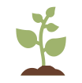
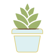

Ecovybe biedt jou de mogelijkheid om vers groenten, fruit en kruiden te bestellen, betalen en achteraf op te halen bij een lokale smart verticale kwekerij. Hierdoor vermijd je die drukke supermarkten en lange wachtrijen aan de kassa.
 Alle producten bij Ecovybe worden gekweekt zonder het gebruik van pesticiden of andere bewaarmiddelen.
Je komt zelf de producten ophalen bij Ecovybe, zo is er geen nood aan transport. Wat natuurlijk goed is voor het milieu.
Heel de kwekerij is smart, dit houdt in dat de planten automatisch hun voedingsstoffen krijgen. De planten worden ook gemonitord, zodat ze niets te kort komen.
De ‘Do It Yourself’-kit van Ecovybe geeft jou de kans om zelf aan de slag te gaan. Altijd al een eigen moestuintje gewild, maar nooit de ruimte gehad? Dankzij de DIY-kit kan nu iedereen zijn eigen groenten, fruit en kruiden binnenshuis kweken.
Bij de DIY-kit hoort ook een applicatie, die helemaal is afgestemd op jouw tuintje. Via deze app ben jij op de hoogte van wanneer je plantjes water nodig hebben, hoe goed ze aan het groeien zijn en wanneer het tijd is om ze te oogsten.
Bestel nuDe Ecovybe DIY-app geeft je duidelijk een overzicht van alles wat je over je planten moet weten. Hebben ze genoeg water of kunnen ze toch wat meer licht gebruiken? De Ecovybe app zorgt dat jij tijdig van alles op de hoogte bent.
De Ecovybe klant-app geeft je de mogelijkheid om bij de smart verticale kwekerij groenten, fruit en kruiden te bestellen en betalen. Zo krijg jij toegang tot de verse producten die Ecovybe te bieden heeft.
De teler heeft zijn eigen Ecovybe app waarmee hij de data van de verticale kwekerij kan zien en vervolgens ook aanpassingen kan maken waar nodig. Door deze applicatie heeft hij ook een overzicht van de producten die zijn gekweekt.